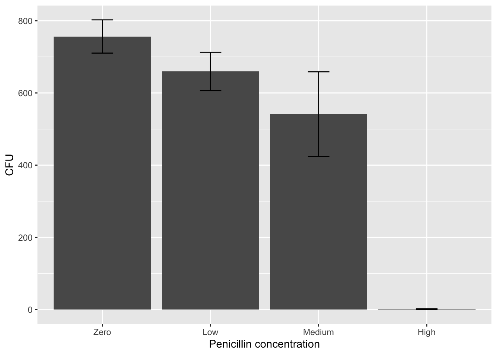
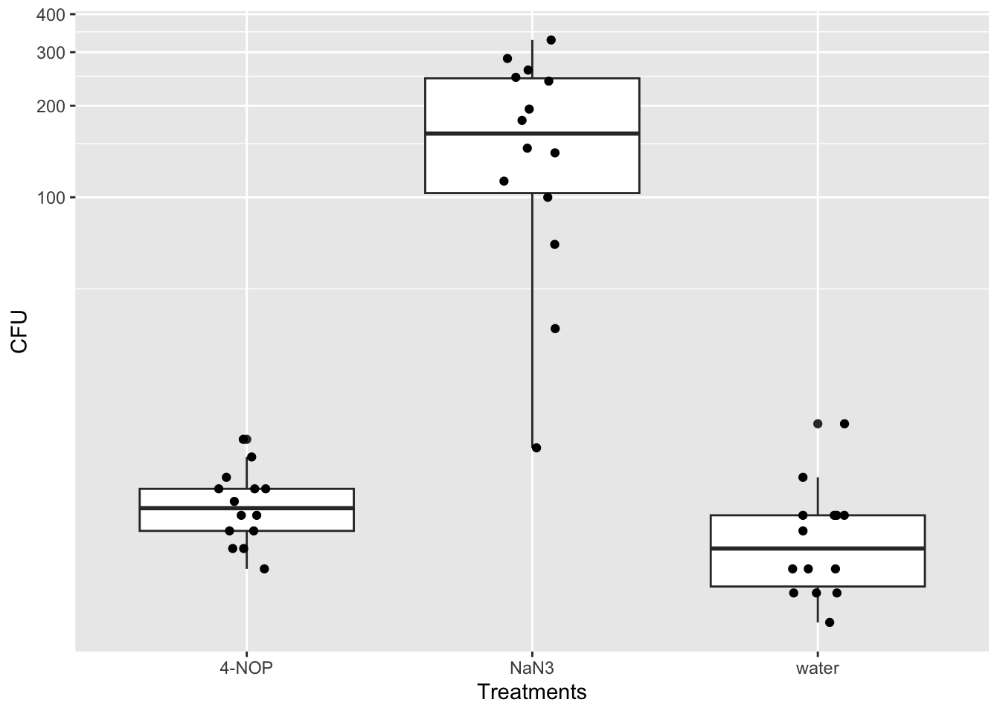
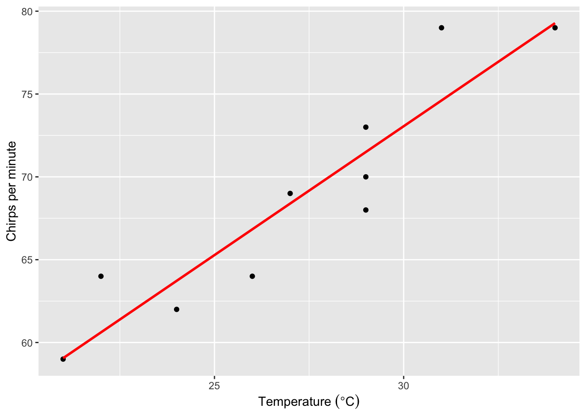
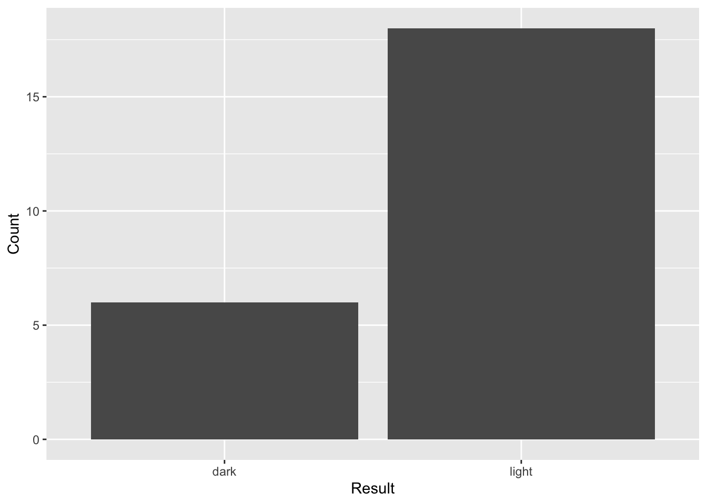

install.packages("ggplot2")
install.packages("readxl")
install.packages("Rmisc")
install.packages("reshape")
#install.packages("tidyverse")
install.packages("agricolae")Big Red Statistics in R
1 Overview of the scientific method
(Will have the same text as the current manual)
2 The importance of statistical tests
(Will have the same text as the current manual)
3 Displaying results with a graph
This section is moved after “Importing data into R”: Displaying results with a graph
4 Descriptive statistics
Mean
The mean \(\bar{x}\) (often referred to as the average) corresponds to the sum of the measurements divided by the number of measurements (as in the case of 10, 40, 25, 35, and 40, which produce a mean of 30). In the case of an odd number of measurements, the median corresponds the measurement in the middle when all of the measurements are sorted from lowest to highest (as in the case of 10, 40, 25, 35, and 40, which produces a median of 35). In the case of an even number of measurements, the median corresponds to the mean of the two measurements in the middle when all of the measurements are sorted from lowest to highest. Finally, the mode corresponds to the most common measurement (as in the case of 10, 40, 25, 35, and 40, which produces a mode of 40).
Standard deviation
The standard deviation (s) is a measure of the distribution of the data (i.e. extent of variation among different subjects) and weights each value by its distance from the mean. There is an increase in the standard deviation if there is a large distance of the values from the mean (as in the case of 10, 40, 25, 35, 40, which have a mean of 30). In contrast, there is a decrease in the standard deviation if there is a small distance (if any) of the values from the mean (as in the case of 25, 30, 35, 30, 30, which have the same mean of 30). The result for each group is summarized as the mean “plus or minus” the standard deviation (\(\bar{x}\) ± s). This gives you a lot of information about the data set. If someone describes a data set as the mean plus or minus one SD, they are giving you the range into which 68% of the data points fall. Mean ± 2 SD gives you the range of 95% of the data, and Mean ± 3 SD encompasses 99% of the data. Note that the standard deviation is sometimes represented by vertical lines known as error bars that extend from the mean in both an upward and downward direction.
Standard error
The standard error of the mean, or simply the standard error (SE) is another common way to state the variation around the mean. Instead of telling you about the range of the data set, it tells you the range of the “true” mean. If you added one sample to your study or took one sample away, the mean may change a little. So your mean is correct for your group of samples, but not necessarily for the whole population of all organisms that could have been in your study. SEM tells you that if you could have included every possible subject or sample - the mean probably would have been somewhere in this range. Once you have a calculated the standard deviation of the mean (s), it is easy to calculate SE.

n = the number of samples or trials. This technique results in a smaller number than s offers, and thus often makes graphs with error bars look smaller. Whether to use s or SE in reporting your statistics and making error bars varies depending on the application, style and field. Be sure to find out what your instructor prefers for your assignments! And always state in your figure legends what your error bars are showing (e.g., “Bars show mean and error bars represent 1SD”).

Coefficient of variation
The coefficient of variation (CV) corresponds to the standard deviation divided by the mean and is useful when comparing the amount of variation for one variable among groups with different means.
The variance in data sometimes fits a normal distribution (i.e. bell curve on a graph); such data are subject to a parametric test. However, the variance in data sometimes does not fit a normal distribution; such data are subject to a non-parametric test (addressed in advanced coursework).
5 Start using R
5.1 Using R in RStudio online or locally
5.1.1 Installation or sign up
R is a command line program where you interact with it through text (command line) instead of a graphical user interface (e.g., Windows, Excel, etc.). There are two options for running R. Your instructor will let you know how you should use R for the class.
In both options, you will not interact directly with R, but through an integrated development environment called Rstudio on your computer or online as Posit.
You can use RStudio online. Sign up for an account here. The “Cloud Free” option will be sufficient. Do not choose the PLUS or other options. Your instructor will send you a link to get access to the class space.
You can also download RStudio and install it on your computer. Note that depends on the version of RStudio and R, the interface and commands could be slightly different from the online version. Follow the instructions here to download and install both R and RStudio.
5.1.2 Project setup and file transfer
Online option
If you choose the cloud option, you will need to upload data/ download output files to/from the cloud. But the benefit is that you can use R anywhere, and on virtually any machine with internet (even a tablet)!
Once in the classroom space, you will see any project assignments that your instructor has created for you. Your instructor will also have access to your assignments in this space. Your instructor may also have created a template for you to work from that includes pre-installed packages.
To create your own project on posit.cloud, click New Project > New RStudio Project on the upper right. Once the project is deployed, on the lower right panel, click the upload button and choose the data file from your computer.
To download a file, check the box next to the file, click the More > Export… and click Download.
Local option
If you choose the local option, you should set up a project and a folder that is associated with this project where all files will be stored.
For example, create a folder on your desktop that is called “R_is_fun”. Start RStudio, click File > New Project… and select Existing Directory and browse to the folder R_is_fun.
Then click Create Project. Now you can access all files in the folder R_is_fun (without indicating the full pathname). Everything you saved in R will also appear in this folder.
5.1.3 The RStudio Interface
Let’s introduce what is being displayed in RStudio. Before we get started, click File > New File > R Script. This will result in a default four-panel interface Figure 1.

(A) The upper left is the R script panel. This is where you will write and save your R script or commands. The panel should be saved regularly, which serves as a record of all the commands that you have (or are planning) to run. For example, clicking File > Save and giving it the name “R_is_fun” will save it as “R_is_fun.R” in your working directory. The scripts here are not being read by R until you click the “Run” button on the top right.
(B) The lower left is the R console, which is the innate command line interface of R. A command from the R script above will be displayed here when you click the “Run” button, which is when R “reads” your command. Any output or error from R will also be displayed here. You could type your command directly here, but it will not be saved in the R script.
(C) The upper right is the environment panel. Objects that are read or generated in R (such as dataframes) will be displayed here, along with any packages that you load and functions that you create. History provides all of your commands from the sessionConnections will enable you to connect to data sources. Tutorials will let you run R tutorials.
(D) The lower right is the files panel. It displays the files in your working directory. In Posit cloud, you will see files uploaded to the course space by your instructor. It also displays figures in a “Plots” tab if your commands result in graphical outputs. The Packages tab indicates which packages are currently installed, while check marks indicate which ones are loaded in the library. The Help tab displays the manual for each package and command.
For a more comprehensive introduction to RStudio, see here.
5.1.4 Using packages
Many packages are available to expand the basic functions of R.
To use these packages, you will need to install them first. Then you can load the package as libraries.
We will install a few packages that will be used in this document. You may be asked to select a mirror to download the packages. Note that you will only need to do this ONCE for each Project.
Then, we will load this packages such that functions from these packages can be used. Note that you WILL need to run this each time when you start your Project.
library("ggplot2")
library("readxl")
library("Rmisc")
library("reshape")
#library("tidyverse")6 Importing data into R
6.1 Preparing a .csv file from Excel
Your data should be entered and stored in spreadsheet programs such as Microsoft Excel before being imported into R. While R can read Excel files (A) such as .xls and .xlsx, data are typically saved into a simpler text format such as .csv (comma-separated values, B), where each row appears in a new line and each column is separated by a comma (,) (Figure 2).

A spreadsheet in Excel can be exported into .csv by clicking File > Save As… and selecting CSV in the drop-down manual under File Format.
Try doing this with name.xlsx which can be downloaded from here.
Place the .csv file into your project’s directory (e.g., R_is_fun) or upload it to your project in posit.cloud using the Files pane (see Project setup and file transfer).
Now, you should see the .csv file listed in the lower right panel of RStudio (?@fig-file_panel).
 .
.
6.2 Loading a .csv file into R
Note that while the name.csv file is in the file panel, it’s not being loaded into R yet. It is merely present in the folder on the cloud or your computer. To load the file into R, in the R script panel, type:
data_name = read.csv(file = "name.csv")
# In most command-line interfaces, texts after # are not read by the software and serve as notes.
# Here, read.csv() is a function.
# You can pass arguments inside the ().
# A function could have no argument or many arguments.
# In read.csv(), the first argument is called file and we pass "name.csv" to this argument.
# Since R knows the expected sequence of arguments (this is called positional argument), you could skip the name and just write:
# data_name = read.csv("name.csv")(Note that you can copy everything on the above “code chunk” using the copy button that appears when you hover your cruiser on the code chunk.)
What the code does is load “name.csv” into R and save it as an object called “data_name”. Now the object “data_name” should appear in the environment panel (Figure 3).

In the environmental panel, you can click on the object to open it in a new tab in the R script panel. Note that doing it actually sends a script to the R console as: View(data_name)
You can also view the object within the R console by calling it directly:
data_name First_name Height_ft Age Academic_standing
1 Denzel 5.8 24 Sophomore
2 Claire 5.0 20 Junior
3 Jack 7.2 29 First-year
4 Quisha 5.7 26 Sophomore
5 Carlos 4.9 24 First-year
6 Julio 5.3 28 Sophomore
7 Hiromi 6.0 26 Senior
8 Jiang 5.5 28 Junior
9 Isha 4.4 18 SeniorYou can see that the file has loaded correctly. The 9 rows and 4 columns are present, as well as the column titles.
The object is a dataframe, which is a class of R object that stores table. See here for other classes in R.
class(data_name)[1] "data.frame"You can get more information of a dataframe with:
str(data_name)'data.frame': 9 obs. of 4 variables:
$ First_name : chr "Denzel" "Claire" "Jack" "Quisha" ...
$ Height_ft : num 5.8 5 7.2 5.7 4.9 5.3 6 5.5 4.4
$ Age : int 24 20 29 26 24 28 26 28 18
$ Academic_standing: chr "Sophomore" "Junior" "First-year" "Sophomore" ...In some cases, you may need to add more arguments to read.csv(). Explore the documentation of this function.
help("read.csv")You can also search for it in the Help tab in the file panel. Another useful tip is that after you type a command, like aov(), you can hit the tab key and RStudio will show the possible arguments. Note also that RStudio will auto-complete the closing bracket for you.
6.3 Loading an Excel file directly
You can also directly import an Excel file into R with the help of the readxl package.
library("readxl")If you saved your Excel file as name.xlsx, then the command below will read the first sheet of an Excel file by default.
read_xlsx(path = "name.xlsx")# A tibble: 9 × 4
First_name Height_ft Age Academic_standing
<chr> <dbl> <dbl> <chr>
1 Denzel 5.8 24 Sophomore
2 Claire 5 20 Junior
3 Jack 7.2 29 First-year
4 Quisha 5.7 26 Sophomore
5 Carlos 4.9 24 First-year
6 Julio 5.3 28 Sophomore
7 Hiromi 6 26 Senior
8 Jiang 5.5 28 Junior
9 Isha 4.4 18 Senior Note that the above code does not save or overwrite the object data_name because we did not do the data_name = read_xlsx(path = "name.xlsx"). It simply read and output the result into the R console.
7 Displaying results with a graph
7.1 How to Construct a Bar Graph
We will use the dataframe that we have loaded before: data_name and the package ggplot2.
We will plot the average Height_ft across different Academic_standing and add an error bar that represents the standard deviation (or standard error if needed).
# We will first have R calculate the mean, sd, and se by group. summarySE is a function in Rmisc.
Height_by_Academic_summary = summarySE(data = data_name, measurevar = "Height_ft", groupvars = "Academic_standing")
# Take a look at Height_by_Academic_summary
Height_by_Academic_summary Academic_standing N Height_ft sd se ci
1 First-year 2 6.05 1.6263456 1.1500000 14.6121354
2 Junior 2 5.25 0.3535534 0.2500000 3.1765512
3 Senior 2 5.20 1.1313708 0.8000000 10.1649638
4 Sophomore 3 5.60 0.2645751 0.1527525 0.6572411# We will also convert Height_ft to be an ordered factor so that it will plot accordingly to the levels specified here, instead of alphabetically
Height_by_Academic_summary$
Academic_standing_order = factor(Height_by_Academic_summary$Academic_standing, ordered=T, levels = c("First-year", "Sophomore", "Junior", "Senior"))# We can then use Height_by_Academic_summary to build a barplot
ggplot(data = Height_by_Academic_summary, aes(x = Academic_standing_order, y = Height_ft)) + # This line is only setting up the dataset and aesthetic mappings
geom_bar(stat="identity") + # This line adds the layer of bar plot
geom_errorbar(aes(ymin=Height_ft-sd, ymax=Height_ft+sd), width=.2,
position=position_dodge(.9)) +
labs(x = "Academic standing", y = "Height (feet)") # The last two lines are additional layers that add the error bar and edit the axis labels.
# You will need at least the firs two lines (connected by +) to build a ggplot:
# ggplot(data = Height_by_Academic_summary, aes(x = Academic_standing_order, y = Height_ft)) +
# geom_bar(stat="identity")
# You could save the first two lines as an object and add additional layers:
# p = ggplot(data = Height_by_Academic_summary, aes(x = Academic_standing_order, y = Height_ft)) + geom_bar(stat="identity")
# p + geom_errorbar(aes(ymin=Height_ft-sd, ymax=Height_ft+sd), width=.2, position=position_dodge(.9)) + labs(x = "Academic standing", y = "Height (feet)") We can also overlap the data points on the bar graph.
# It requires getting the raw data from data_name
ggplot(data = Height_by_Academic_summary, aes(x = Academic_standing_order, y = Height_ft)) +
geom_bar(stat="identity") +
geom_errorbar(aes(ymin=Height_ft-sd, ymax=Height_ft+sd), width=.2,
position=position_dodge(.9)) +
labs(x = "Academic standing", y = "Height (feet)") +
geom_point(data = data_name, aes(x = Academic_standing, y = Height_ft), position = "jitter")Another good way to display the same data is to use a boxplot.
ggplot(data = data_name, aes(x = Academic_standing, y = Height_ft)) +
geom_boxplot(outlier.colour = "grey") +
geom_jitter(width = 0.1, height = 0)7.2 How to Construct a Scatter Plot with a Linear Fit
We will use the dataframe that we have loaded before: data_name and the package ggplot2.
We will plot Age as the predictor (independent) variable on the X axis and Height_ft as the response (dependent) variable on the Y axis. A linear regression line will be added.
ggplot(data = data_name, aes(x = Age, Height_ft)) +
geom_point() +
stat_smooth(method = "lm", se = F, color = "red") +
labs(y = "Height (feet)")`geom_smooth()` using formula = 'y ~ x'8 How to generate descriptive statistics
Let’s say that you measure the length of each of 12 seashells. Here are the instructions for determining the mean and standard deviation using R:
Follow the instructions in the previous section to enter your continuous data into a new dataframe called seashells. In this case your dependent variable is Length_cm of the seashells.
For example, you can first enter your data into Excel (?@fig-seashellexcel), and save if as seashells.csv in your project’s directory.
 .
.
Then you can run this to load it as a dataframe called seashells
seashells = read.csv("seashells.csv")Alternative, you also run this code to manually enter the data:
seashells = data.frame("Length_cm" = c(3, 4.5, 3.1, 4.2, 4.4, 4, 3.6, 3.7, 3.1, 2.8, 4.3, 5))Either way, your data should look like this:
seashells Length_cm
1 3.0
2 4.5
3 3.1
4 4.2
5 4.4
6 4.0
7 3.6
8 3.7
9 3.1
10 2.8
11 4.3
12 5.0You can check whether Length_cm is continuous (i.e, numeric).
class(seashells$Length_cm)[1] "numeric"Generate basic summary statistics.
summary(seashells$Length_cm) Min. 1st Qu. Median Mean 3rd Qu. Max.
2.800 3.100 3.850 3.808 4.325 5.000 Generate standard deviation (SD).
sd(seashells$Length_cm)[1] 0.7012435Generate standard error (SE) using the formula
sd(seashells$Length_cm)/sqrt(length(seashells$Length_cm)) [1] 0.2024316Generate standard deviation (SD) and standard error (SE) using the package Rmisc
library("Rmisc") # You don't need to write this everytime if you have loaded the library before.
summarySE(seashells, "Length_cm") .id N Length_cm sd se ci
1 <NA> 12 3.808333 0.7012435 0.2024316 0.4455489You can easily calculate the means and standard deviations of different groups in R at the same time. Let’s say you measured 12 shells again, but this experiment you used 3 different species. You can calculate the means and standard deviations of the different species by inputting your data in the following way:
# We will add another column to the dataframe
seashells$Species = c(rep("Species1", 4), rep("Species2", 4), rep("Species3", 4))
# To view the data:
seashells Length_cm Species
1 3.0 Species1
2 4.5 Species1
3 3.1 Species1
4 4.2 Species1
5 4.4 Species2
6 4.0 Species2
7 3.6 Species2
8 3.7 Species2
9 3.1 Species3
10 2.8 Species3
11 4.3 Species3
12 5.0 Species3Then use summarySE from Rmisc
summarySE(data = seashells, measurevar = "Length_cm", groupvars = "Species", ) Species N Length_cm sd se ci
1 Species1 4 3.700 0.7615773 0.3807887 1.2118394
2 Species2 4 3.925 0.3593976 0.1796988 0.5718819
3 Species3 4 3.800 1.0295630 0.5147815 1.6382645With this data, you can make a table to summarize descriptive statistics of seashell lengths from three different species (Figure 4).

9 Inferential statistics
Step One: Figure out what statistic you should use! How do you do that? First, you should be able to clearly write out your experimental question, your hypothesis, and identify your dependent and independent variables. Go ahead – do it now – I’ll wait.
Once you have your variables identified, determine if they are continuous (measurement) data or nominal (categorical) data. Now you can use the chart below to figure out which type of statistic is right for you (Figure 5). Note that each combination of variable types also has a type of graph or table that is typically used to display the data! Instructions for how to run each stat and make each figure are given in the sections that follow.
9.1 Linear regression
A linear regression is employed to determine if there is a relationship between two variables, X and Y when both variables are continuous (measurement) type data. A p value that is less than 0.05 indicates that there is less than 5% probability that the association you observe is due to chance under the null hypothesis. In practice this means you can reject the null hypothesis and conclude that something other than chance is producing the relationship that you observe. This statistical test will also indicate the direction and magnitude of the relationship. The direction is inferred from the slope of the line (m), while the magnitude or strength of the relationship is inferred from the coefficient of determination (R2). If R2 = 1, then the line is a perfect “fit,” meaning that Y can be predicted from X (or vice versa) using the equation of the line (y = mx + b). If R2 < 1, then the line is not a perfect “fit,” meaning that only a proportion of Y can be predicted from X (or vice versa) using the equation of the line (y = mx + b). For example, if R2 = 0.94, then 94% of the variation in Y can be explained by X. Note that the R2 and line equation are ONLY relevant if there is a significant relationship (p < 0.05). If there is no significant relationship, then the line and its equation are arbitrary and not meaningful. Likewise, you can’t describe the magnitude of a relationship (R2) if there is no relationship.
Let’s say that want to determine if temperature is related to chirp rates of the snowy tree cricket. You measure the temperature and the rate of 10 chirping crickets at those respective temperatures. Since crickets are ectoderms and their metabolism is effected by their external environment, we should expect to see an increase in chirping as temperature increases.
Load the data into R by running the code below. We have two continuous variables temperature and chips_per_min.
chirps = data.frame(temperature = c(31, 22, 34, 29, 27, 24, 21, 29, 26, 29), chirps_per_min = c(79, 64, 79, 73, 69, 62, 59, 70, 64, 68))
chirps temperature chirps_per_min
1 31 79
2 22 64
3 34 79
4 29 73
5 27 69
6 24 62
7 21 59
8 29 70
9 26 64
10 29 68In R the lm function can fit a number of linear models, including linear regression.
The code below creates a linear model (lm_HA) to predict chirps_per_min (the response or dependent variable) by temperature (the predictor or independent variable):
lm_CT = lm(formula = chirps_per_min ~ temperature, data = chirps)
lm_CT
Call:
lm(formula = chirps_per_min ~ temperature, data = chirps)
Coefficients:
(Intercept) temperature
26.389 1.556 Calling lm_CT shows the coefficients for intercept and slope (under temperature) of the linear regression. But we can get much more out of lm_CT using summary().
summary(lm_CT)
Call:
lm(formula = chirps_per_min ~ temperature, data = chirps)
Residuals:
Min 1Q Median 3Q Max
-3.5000 -1.6667 -0.1667 1.2778 4.3889
Coefficients:
Estimate Std. Error t value Pr(>|t|)
(Intercept) 26.3889 6.1375 4.300 0.002617 **
temperature 1.5556 0.2234 6.962 0.000117 ***
---
Signif. codes: 0 '***' 0.001 '**' 0.01 '*' 0.05 '.' 0.1 ' ' 1
Residual standard error: 2.714 on 8 degrees of freedom
Multiple R-squared: 0.8583, Adjusted R-squared: 0.8406
F-statistic: 48.47 on 1 and 8 DF, p-value: 0.000117Under “Coefficients”, it shows a t-test of whether the intercept and slope (temperature) is significantly different from zero.
In the last three lines, it shows:
Residual standard error: lower values suggest better fit (i.e., less distance between the data point and the predicted line).
Degrees of freedom: the maximum number of logically independent values.
Multiple R-squared: the percentage of the response variable variation that a the model explains.
Adjusted R-squared: R-squared adjusted for the number of terms in the model. Use this to compare between models with different number of predictor variables.
Statistics of a F-test that evaluates the fit of the model.
Although the F-test is at the end, it should be examined first to determine whether the linear model fits the data if you have multiple response variables. Only when the model is well fitted, should you further interpret the significance of the intercept and slope.
In this example, the linear regression is significant because the p-value of the F test is lower than 0.05 (p = 0.000117), so we can continue to examine the intercept and slope.
The slope is 1.5556 (under “Estimate” in “Coefficient”) and the t-test indicates that it is significantly different from zero (p = 0.000117). Note that this p-value is the same as that of the F-test only when there is a single predictor variable. In multiple regression, there will be separate t-tests for each predictor variable.
Therefore we can write a statement to summarize the result and provide the statistical support:
There is a positive relationship between height and age (slope = 1.556, F = 48.47, d.f. = 1 and 8, p = 0.0001).
9.1.1 Visualization: scatter plot
Visualization for linear regression is shown above in How to Construct a Scatter Plot with a Linear Fit. For this dataframe chirps, we can do this:
ggplot(data = chirps, aes(x = temperature, y = chirps_per_min)) +
geom_point() +
geom_smooth(method = lm, se = F, color = "red") +
labs(y = "Chirps per minute", x = expression("Temperature " ( degree*C)))`geom_smooth()` using formula = 'y ~ x'Figure 6. The relationship between air temperature and chirps per minute of snowy tree crickets. Chirps were counted for 10 crickets at different temperatures. There was a significant positive relationship between temperature and cricket’s chirps per minute (linear regression, p<0.0001, R2 = 0.85, y =-26.2+1.57*x).
9.2 T-test
A t-test is used when the independent variable is nominal and has exactly two categories (such as an experimental group and a control group) and the dependent variable consists of continuous (measurement) data. If the p value is less than 0.05, then the statistical value you calculate (the ‘t-value’) has a low probability (less than 5%) of occurring by chance if the null hypothesis is true. What this means in practical terms is that you have evidence that something other than the null hypothesis is occurring - there is a relationship between your two variables! - and you can reject your null hypothesis and describe the relationship (in this case a relationship between the independent variable “experimental group” and the dependent variable “outcome measure” can also be described as a difference in outcome between groups). In contrast, if the p value is more than 0.05, then the biologist fails to reject the null hypothesis that there is no significant difference between the two groups. In practical terms this means that the scientist has no evidence that the means are different.
Let’s say that you want to test if a fertilizer has a significant effect on the growth of plants. You measure the height of 10 plants, 5 grown with just soil and 5 grown with soil and added fertilizer. Both groups are grown for the same length of time. Here are the instructions for performing a t-test (for comparing two groups) using R:
You can try the codes using the sample 210 data “2024 R Workshop for Faculty” Google Drive.
Run this code to generate the data manually.
fertilizer = data.frame("Treatment" = c(rep("Soil", 5), rep("Soil+fertilizer", 5)),
"Plant_height_cm" = c(10.5, 13, 9, 11, 14, 17, 18.5, 20, 16, 17.5))
fertilizer Treatment Plant_height_cm
1 Soil 10.5
2 Soil 13.0
3 Soil 9.0
4 Soil 11.0
5 Soil 14.0
6 Soil+fertilizer 17.0
7 Soil+fertilizer 18.5
8 Soil+fertilizer 20.0
9 Soil+fertilizer 16.0
10 Soil+fertilizer 17.5Notice that there are only 2 nominal variables (soil and soil+fertilizer). If there are more than 2 nominal variables an ANOVA must be used to analyze the data.
unique(fertilizer$Treatment)[1] "Soil" "Soil+fertilizer"To test whether Plant_height_cm is different between Treatment , in other word, whether Treatment affect Plant_height_cm, we will use t.test():
t.test(Plant_height_cm~Treatment, data = fertilizer, alternative = "two.sided", var.equal = FALSE)
Welch Two Sample t-test
data: Plant_height_cm by Treatment
t = -5.6014, df = 7.4757, p-value = 0.0006475
alternative hypothesis: true difference in means between group Soil and group Soil+fertilizer is not equal to 0
95 percent confidence interval:
-8.925619 -3.674381
sample estimates:
mean in group Soil mean in group Soil+fertilizer
11.5 17.8 alternative can also be “greater” or “less” if you have an a priori reason to test a directional difference between groups.
In this case, the p-value is 0.0006475. We failed to reject the null hypothesis that Treatment can affect Plant_height_cm. Hence we can write a summary statement like:
Treatment group does not significantly affect plant height (t = -5.601, d.f. = 7.476, p = 0.001)
9.2.1 Visualization: boxplot
You can plot the continuous variable from two groups in a number of ways.
One way is to use a boxplot:
ggplot(data = fertilizer, aes(x = Treatment, y = Plant_height_cm)) +
geom_boxplot(outlier.colour = "grey") +
geom_jitter(width = 0.1, height = 0) +
labs(x = "Treatment", y = "Plant height (cm)")
9.3 ANOVA
9.3.1 Global ANOVA test
An ANOVA is used in a similar circumstance as a t-test: nominal independent variable and continuous dependent variable, but when there are three or more categories for the independent variable (perhaps you tried multiple experimental treatments).
If the p value is more than 0.05, then the biologist fails to reject the “null hypothesis” that there is no significant difference between any pairs of groups. If the p value is less than 0.05, then the statistical value you calculate (the ‘F-value’) has a low probability (less than 5%) of occurring by chance if the null hypothesis is true. In this case, the null hypothesis is rejected, and the biologist must then perform additional “post-hoc” tests to determine exactly which pair(s) of groups are significantly different from one another. In the JMP output, groups with the same letters (such as A and A) are not significantly different from one another, while groups with different letters (such as A and B) are significantly different from one another (refer to sample graph). In the case of a significant difference, biologists must determine if the outcome is what they expected or is the opposite of what they expected.
Let’s say you want to measure the effectiveness of penicillin in disrupting E. coli growth. Penicillin is a common antibiotic that disrupts cell wall formation thus halting cellular division in many microbes. In order to see which dose is most effective, we will test 3 different concentrations as well as a control (no penicillin). The response variable in this case is measured in CFU (colony forming unit). This colony shows that how many single cells survived to divide into a visible colony.
Run this code to generate the data manually.
penicillin = data.frame(
Penicillin_conc = c(rep(0,5), rep(100, 5), rep(150, 5), rep(200,5)),
CFU = c(795, 611, 703, 698, 675, 652, 696, 702, 689, 709, 196, 75, 111, 77, 154, 2, 0, 2, 1, 0))
# We will adjust Penicillin_conc to be a ordered factor
penicillin$Penicillin_conc = factor(penicillin$Penicillin_conc, ordered = T, levels = c(0, 100, 150, 200))
penicillin Penicillin_conc CFU
1 0 795
2 0 611
3 0 703
4 0 698
5 0 675
6 100 652
7 100 696
8 100 702
9 100 689
10 100 709
11 150 196
12 150 75
13 150 111
14 150 77
15 150 154
16 200 2
17 200 0
18 200 2
19 200 1
20 200 0To test whether Penicillin_conc affects CFU, we will build the model using aov(), then use summary() to show the full results:
p_anova_model = aov(formula = CFU ~ Penicillin_conc, data = penicillin)
summary(p_anova_model) Df Sum Sq Mean Sq F value Pr(>F)
Penicillin_conc 3 2029149 676383 356.4 7.4e-15 ***
Residuals 16 30362 1898
---
Signif. codes: 0 '***' 0.001 '**' 0.01 '*' 0.05 '.' 0.1 ' ' 1Note that the results is similar to the F-test in the last part of linear regression, because ANOVA and regression are both linear models. But in ANOVA, we don’t have predictions of slope and intercepts.
In this case, since the p-value is <0.05. We rejected the null hypothesis that Penicillin_conc has an effect on CFU Therefore, we can write a summary statement to say:
Penicillin concentration significantly affect CFU (F = 356.4, d.f. = 3 and 16, p < 0.0001)
9.3.2 Post hoc test
If the p value is below 0.05, you must run post hoc tests to compare the means. We can compare all means using Tukey HSD to obtain information about which pair(s) of species are significantly different from one another.
library(multcomp)Loading required package: mvtnormLoading required package: survivalLoading required package: TH.dataLoading required package: MASS
Attaching package: 'TH.data'The following object is masked from 'package:MASS':
geyser# Tukey HSD test:
post_test <- glht(p_anova_model,
linfct = mcp(Penicillin_conc = "Tukey")
)
summary(post_test)
Simultaneous Tests for General Linear Hypotheses
Multiple Comparisons of Means: Tukey Contrasts
Fit: aov(formula = CFU ~ Penicillin_conc, data = penicillin)
Linear Hypotheses:
Estimate Std. Error t value Pr(>|t|)
100 - 0 == 0 -6.80 27.55 -0.247 0.99450
150 - 0 == 0 -573.80 27.55 -20.827 < 0.001 ***
200 - 0 == 0 -695.40 27.55 -25.241 < 0.001 ***
150 - 100 == 0 -567.00 27.55 -20.580 < 0.001 ***
200 - 100 == 0 -688.60 27.55 -24.994 < 0.001 ***
200 - 150 == 0 -121.60 27.55 -4.414 0.00208 **
---
Signif. codes: 0 '***' 0.001 '**' 0.01 '*' 0.05 '.' 0.1 ' ' 1
(Adjusted p values reported -- single-step method)This test compares the mean of each group to determine which are significantly different from each other. Pr(>|t|) indicates the p values for each pair. This shows us that all the means of E. coli growth are different except for the 0 and 100 ug/mL concentrations. These differences can be indicated with letters on your final figure.
To generate the letter groupings, we need to run the same test with a different library:
library(agricolae)
hsd = HSD.test(p_anova_model, trt = "Penicillin_conc", group = T)
hsd$statistics
MSerror Df Mean CV MSD
1897.6 16 377.4 11.54251 78.82304
$parameters
test name.t ntr StudentizedRange alpha
Tukey Penicillin_conc 4 4.046093 0.05
$means
CFU std r se Min Max Q25 Q50 Q75
0 696.4 66.18006 5 19.48127 611 795 675 698 703
100 689.6 22.27779 5 19.48127 652 709 689 696 702
150 122.6 52.08935 5 19.48127 75 196 77 111 154
200 1.0 1.00000 5 19.48127 0 2 0 1 2
$comparison
NULL
$groups
CFU groups
0 696.4 a
100 689.6 a
150 122.6 b
200 1.0 c
attr(,"class")
[1] "group"Under $groups, the letters indicates the CFU at 0 and 100 ug/mL of panicillin are not different from each other as they are both in group “a”. But 150 ug/ml and 200 ug/ml are both significantly different from both 0 and 100 ug/mL as they are in different letter groups b and c, respectively.
9.3.3 Visualization: box plot and bar plot
Similar to the t-test, we can plot the data used for ANOVA using a boxplot:
ggplot(data = penicillin, aes(x = Penicillin_conc, y = CFU)) +
geom_boxplot() +
geom_jitter(width = 0.1, height = 0) +
labs(x = expression("Amount of penicillin " (mu*g/mL)))
We can also incorporate results from the post hoc test to the figure:
# We use the letters from hsd to build a dataframe to help us label the plot
temp_label = merge(hsd$means, hsd$groups, by = c("row.names", names(hsd$means)[1]))
names(temp_label)[1] = hsd$parameters$name.t
temp_label Penicillin_conc CFU std r se Min Max Q25 Q50 Q75 groups
1 0 696.4 66.18006 5 19.48127 611 795 675 698 703 a
2 100 689.6 22.27779 5 19.48127 652 709 689 696 702 a
3 150 122.6 52.08935 5 19.48127 75 196 77 111 154 b
4 200 1.0 1.00000 5 19.48127 0 2 0 1 2 c# Then we can add labels to the ggplot
ggplot(data = penicillin, aes(x = Penicillin_conc, y = CFU)) +
geom_boxplot() +
geom_jitter(width = 0.1, height = 0) +
labs(x = expression("Amount of penicillin " (mu*g/mL))) +
geom_text(data = temp_label, aes(x = Penicillin_conc,
y = Max+max(temp_label$Max)*0.1,
label = groups))Warning: Use of `temp_label$Max` is discouraged.
ℹ Use `Max` instead.Similar to How to Construct a Bar Graph, we can create a bar plot with error bars and the post hoc letter groupings.
penicillin_summary = summarySE(data = penicillin, measurevar = "CFU", groupvars = "Penicillin_conc")
ggplot(data = penicillin_summary, aes(x = Penicillin_conc, y = CFU)) +
geom_bar(stat="identity") +
geom_errorbar(aes(ymin=CFU-sd, ymax=CFU+sd), width=.2,
position=position_dodge(.9)) +
labs(x = expression("Amount of penicillin " (mu*g/mL))) +
geom_jitter(data = penicillin, aes(x = Penicillin_conc, y = CFU), width = 0.2, height = 0) +
geom_text(data = temp_label, aes(x = Penicillin_conc,
y = Max+max(temp_label$Max)*0.1,
label = groups))Warning: Use of `temp_label$Max` is discouraged.
ℹ Use `Max` instead.9.4 Two types of Chi-square (X2) tests
Chi-Square tests are used when both the dependent and independent variables are nominal.
9.4.0.1 Goodness of Fit test
The Goodness of Fit test is used to determine if the observed result (i.e. collected during an experiment) is significantly different than the “expected” result (i.e. that based on the laws of probability). It involves calculating the degrees of freedom (DF), which corresponds to the following equation: DF = (C – 1) where C is the number of categories. It also involves calculating the Chi-square value (X2), which corresponds to the following equation: X2 = S (D2/E) where D is the difference between the observed result (O) and expected result (E). The biologist determines if the X2 value is less than the “critical” X2 value for an experiment with a particular DF to determine if there is a significant difference (p value < 0.05) between the observed and expected result.
 .
.
Let’s say that you have crustaceans and test their preference for a light or dark environment. In this example there is only ONE variable: the observed preference (are they in the light or dark when you check on them?). You want to see if the distribution of crustaceans is random (roughly 50% in the light and 50% in the dark because they have no preference and distribute according to the laws of probability) OR if the distribution is non-random because they prefer either dark or light.
The null hypothesis for this test is that the variable of interest (light/dark environment) will have no impact on the distribution of the data. In other words, the null hypothesis assumes a random distribution, which means observed is no different from expected. If p>0.05, you accept the null.
A significant result (p<0.05) means the distribution of your observed data is different than expected; it is non-random.
9.4.1 Chi-square - Goodness of Fit test
The goodness of fit Chi-square test is used to test whether the distribution of a categorical variable is significantly different than an “expected” distribution. There is no predictor in this case.
For example, in a species of crustacena, we counted the number of individuals that prefer a light and a dark treatment. We may expect the light:dark ratio to be 1:1 and we can test it with the chi-square goodness of fit test.
We will create a file that may be similar to how your raw data will look like in a “long form”:
crust_sp1 = data.frame(Crustacean = "Species 1", Result = c("light", "light", "dark", "light", "light", "light", "light", "light", "dark", "dark", "light", "light", "light", "light", "light", "light", "light", "dark", "dark", "dark", "light", "light", "light", "light"))
crust_sp1 Crustacean Result
1 Species 1 light
2 Species 1 light
3 Species 1 dark
4 Species 1 light
5 Species 1 light
6 Species 1 light
7 Species 1 light
8 Species 1 light
9 Species 1 dark
10 Species 1 dark
11 Species 1 light
12 Species 1 light
13 Species 1 light
14 Species 1 light
15 Species 1 light
16 Species 1 light
17 Species 1 light
18 Species 1 dark
19 Species 1 dark
20 Species 1 dark
21 Species 1 light
22 Species 1 light
23 Species 1 light
24 Species 1 lightWe can convert this into the “short form” :
crust_table = table(crust_sp1[,"Result"])
crust_table
dark light
6 18 We can then test whether the observed distribution of Result is equally distributed among the two groups (i.e., 1:1) using chisq.test().
chisq.test(x = crust_table)
Chi-squared test for given probabilities
data: crust_table
X-squared = 6, df = 1, p-value = 0.01431The X-squared value (6) is the “Pearson” test chi square value. It is used, with the degrees of freedom (df) value, to obtain the p-value from a chi-squared table.
The null hypothesis of the test is that the groups are equally distributed. The p-value is < 0.05, which means that we can reject the null hypothesis. Therefore, our observed distribution of Age_group is significantly different from 1:1.
If there is an a priori reason that the distribution should be, for example, 3:1, we can modify the code to test this:
chisq.test(x = crust_table, p = c(3/4,1/4))
Chi-squared test for given probabilities
data: crust_table
X-squared = 32, df = 1, p-value = 1.542e-08In this second test, the p-value is < 0.05, so we can reject the null hypothesis. Hence the distribution is significantly different from 3:1.
Visualization
There are several ways of visually representing X2 results in either a figure or a table. Ask your instructor about their preference.
For a table:
The table should be a simplified version of the table that JMP provided. Rather than trying to modify the JMP table, just start from scratch in Excel or Word and make your own. Adjust the sizes of the cells and other formatting as needed to make it easy to read. See Table 2 at the very end of the Chi-square section for a good example.*
Just as a graph has a figure legend, a table must be accompanied by a table heading. Similar to a figure legend, the table heading starts with a number and a title in bold, then gives a description of the result and statistics in complete sentences. One key difference, while figure legends should be placed directly below a figure, the table heading goes above the table. Also, if you have both figures (graphs or pictures) and tables in your paper, you number them separately. Again, see Table 2 in the next section for good example.*

For a graph:
The type of graph used to display frequency (count) data is called a histogram.
You can plot the data for a goodness of fit Chi-square test by using the raw data in crust_sp1.
ggplot(data = crust_sp1, aes(x = Result)) +
geom_bar() +
labs(x = "Result", y = "Count")
Alternative, you could also plot using the count data crust_table after converting it to a dataframe:
ggplot(data.frame(crust_table), aes(Var1, Freq, fill = Var1)) +
geom_col() +
labs(x = "Result", y = "Count")
# fill tells R to color the bar by Var1
# you can remove the side legned by adding:
# + theme(legend.position = "none")9.4.2 Chi-square - Contingency test
The Contingency test, also called the Test of Independence, is used to determine if the difference between two groups is significantly different depending on (contingent on) another variable. Or, put another way, you might want to determine if the frequency of outcomes for one set of observations matches those for another set of observations. For example, let’s imagine that we want to know whether two different species of crustaceans exhibit the same preference for light or dark. In other words, is the preference for light or dark contingent on which species it is? To find this out one uses a special version of Chi-square tests known as a contingency table.
In this case, your independent variable is species and your dependent variable is preference (because you think preference might depend on species); your null hypothesis is that there is no difference in the preference for light versus dark between Species 1 and 2, regardless of whatever that preference is. When you run a contingency test you produce a X2 value as in the Goodness of Fit test. If the X2 value is large enough (leading to p<0.05), then you can reject the null hypothesis that the proportion of crustaceans showing a preference for light is not different between the two species, and state that the data show that the preference for light or dark is contingent on the species. Another way to say the same thing: the two species show significantly different preferences for light.
Let’s imagine that we test the preference of two crustacean species for light versus dark and compare the preferences. The values could be arranged in a table like the one below.

If the preferences of the two species were the same, then they should each have roughly the same frequencies as the pooled results, which show animals split between dark and light, with possibly a small preference for dark (28 dark and 20 light). Do species 1 and 2 appear to have similar preferences? Note that the total number of observations/ occurrences do not have to be the same for both species. A contingency test will correct for different sizes between samples. Let’s conduct the test and see.
We will begin by making up the data for species 2:
crust_sp2 = data.frame(Crustacean = "Species 2", Result = c(rep("dark", 22), rep("light", 2)))
crust_sp2 Crustacean Result
1 Species 2 dark
2 Species 2 dark
3 Species 2 dark
4 Species 2 dark
5 Species 2 dark
6 Species 2 dark
7 Species 2 dark
8 Species 2 dark
9 Species 2 dark
10 Species 2 dark
11 Species 2 dark
12 Species 2 dark
13 Species 2 dark
14 Species 2 dark
15 Species 2 dark
16 Species 2 dark
17 Species 2 dark
18 Species 2 dark
19 Species 2 dark
20 Species 2 dark
21 Species 2 dark
22 Species 2 dark
23 Species 2 light
24 Species 2 lightThen we will add it to the previous crust_sp1 to make a new object;
crust_twoSp = rbind(crust_sp1, crust_sp2)
crust_twoSp
# The table is very long; so we are not displaying it here.We will first reshape our data into a contingency table using table():
crust_twoSp_table = table(crust_twoSp$Crustacean, crust_twoSp$Result)
crust_twoSp_table
dark light
Species 1 6 18
Species 2 22 2We can then test the null hypothesis that there is no difference in the preference for light versus dark between Species 1 and 2.
chisq.test(crust_twoSp_table)
Pearson's Chi-squared test with Yates' continuity correction
data: crust_twoSp_table
X-squared = 19.286, df = 1, p-value = 1.125e-05Visualization
You can plot the contingency table by geom_bar():
ggplot(data = crust_twoSp, aes(x = Result)) + geom_bar() + facet_grid(~Crustacean) +
labs(x = "Result", y = "Count")
The legend to this figure should be:
Figure __. Two crustacean species showed different light/dark preferences. Twenty-four crustaceans of each species were observed to see if they moved to the light or dark portion of their tanks. The species were found to have significantly different preferences, with Species 1 being found in the light more often while Species 2 were more likely to be in the dark (Chi- square contingency test, Χ2 =24.442, d.f.= 1, p<0.001).
Just as a graph has a figure legend, a table must be accompanied by a table heading. Similar to a figure legend, the table heading starts with a number and a title in bold, then gives a description of the result and statistics in complete sentences (Table 2). One key difference, while figure legends should be placed directly below a figure, the table heading goes above the table. Also, if you have both figures (graphs or pictures) and tables in your paper, you number them separately.